Restaurant Les MarinesDéniaDes de 1980
Casa Federico Arroces de antaño y pescado de la lonja, bajo el cañizo.
Cocina de la Marina Alta en la playa de Les Marines, a 600 metros del puerto de Dénia y a 40 de la arena. Una familia, la misma mesa, desde 1980.
13:30–16:00 y 19:30–23:00 · martes cerrado
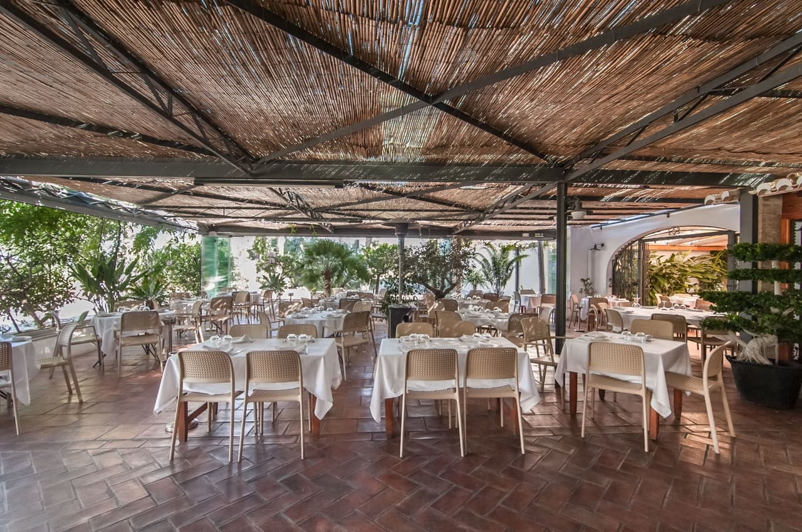
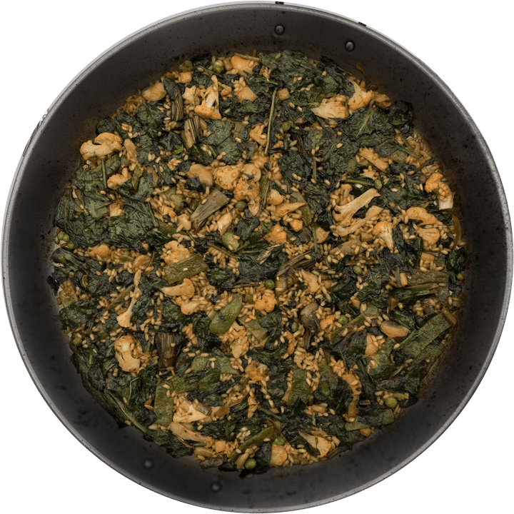
Arroces de recetas de antaño, siempre para compartir.
01La casa
Nuestro espacio es tu casa.
En 1980, en una comida familiar, decidimos abrir en la playa un sitio para comer la cocina de la Marina Alta: los arroces de siempre, el pescado de nuestra lonja y la verdura de la huerta.
Empezó siendo un chiringuito. Hoy lo llevan Pepa y Jaime Cervera Devesa, la segunda generación: ella al frente de la sala y él en la cocina. Los platos apenas han cambiado desde entonces, y es a propósito.
«Tradición recuperada y llevada al siglo XXI, con sencillez, humildad y desde la exigencia por hacerlo bien.»
Así resume la casa su cocina
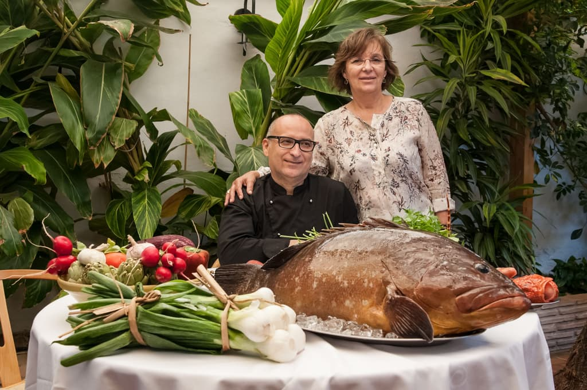
- 1980
- En la misma playa desde entonces
- 3
- Espacios: dos terrazas y el comedor
- 200+
- Vinos D.O., cavas y champagne
- 11
- Meses al año abiertos. En enero, vacaciones
02Arrossos
Más de veinte arroces, cada uno con su punto.
Arroces de recetas de antaño, los que se hacían en las casas de la Marina: a banda, del senyoret, de ceba i bacallar, de fesols i naps… Y cualquiera se puede pedir de tres maneras.
Seco, en su paella
Grano suelto, capa fina y el socarrat pegado al fondo. Se sirve en la misma paella, en el centro de la mesa.
Como la paella valenciana o el arroz a banda.
- Arròs a banda15,00 €Arroz a banda, con fumet de pescado
- Arròs del senyoret17,50 €Del señoret: todo el marisco, pelado
- Arròs amb llamàntol27,00 €Arroz con bogavante
- Arròs negre16,00 €Arroz negro, con tinta de sepia
- Fideuada17,00 €Fideuá de fideo fino
- Paella valenciana16,00 €Pollo y conejo; con caracoles, +0,50
- Paella mixta18,00 €Carne y marisco
- Paella de l'horta16,00 €De la huerta, con carne y verduras
- Paella de verdura15,00 €Paella de verdura
- Paella de ceba i bacallar15,50 €Cebolla y bacalao
- Paella d'aladroc i espinacs15,50 €Boquerones y espinacas
- Arròs al forn Encargo15,00 €Arroz al horno
- Arròs amb fesols i naps Encargo16,00 €Alubias y nabos, de temporada. Caldoso
- Arròs de putxero amb pilota9,50 €Arroz de puchero con pelota
- Precio por ración, mínimo dos. Un arroz se hace en su paella y para compartir.
- Un arroz por mesa; un segundo, según cómo vaya la cocina. Cada paella necesita su fuego y su tiempo.
- El arroz al horno y los guisos marineros, por encargo: avísanos con antelación.
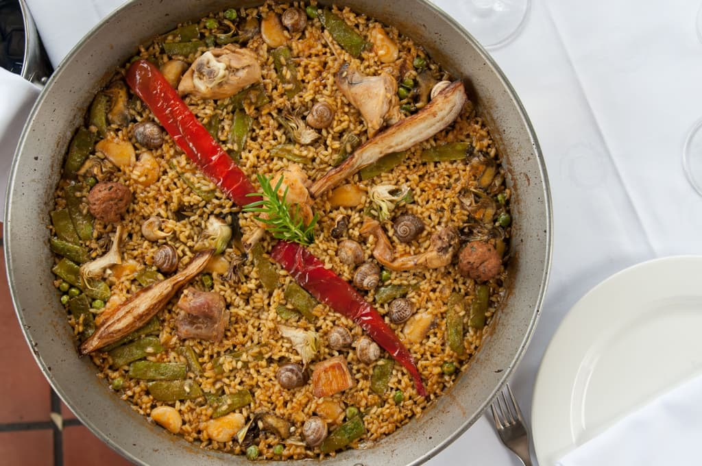
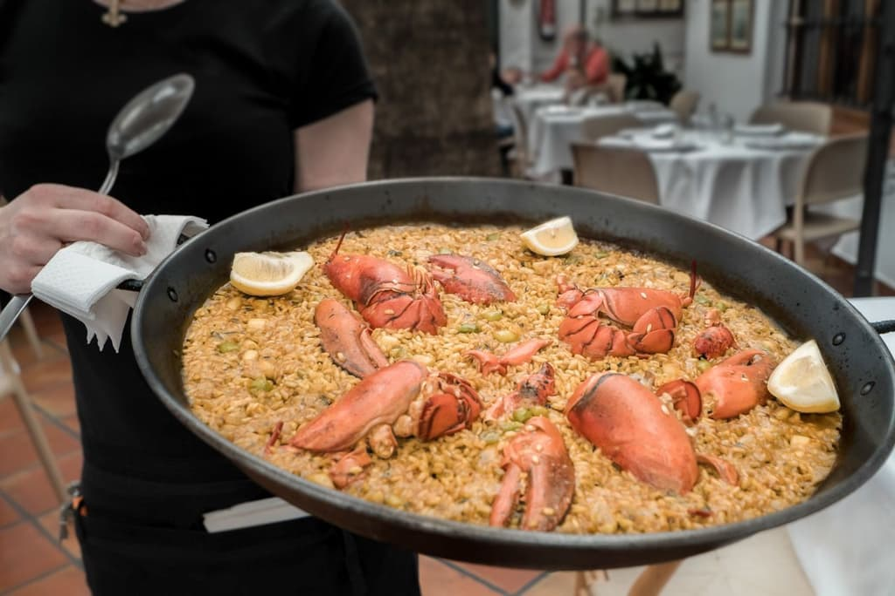
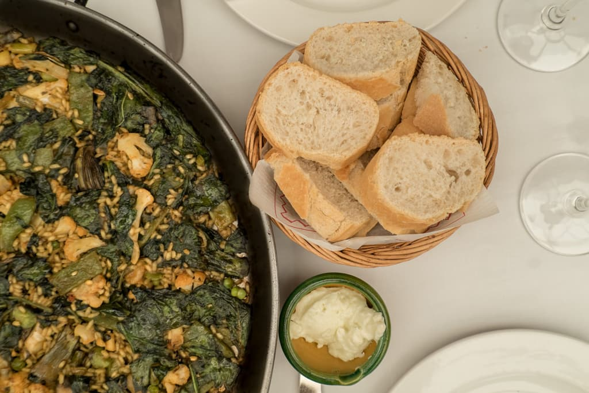
03De la Llotja
Lo que entra cada día por la lonja de Dénia.
Todo el producto llega a diario de la Lonja de Dénia: pescado de pesca local, de los fondos de roca y posidonia de nuestra bahía, y marisco sin congelar.
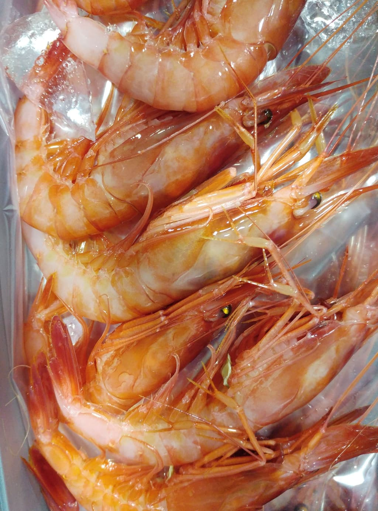
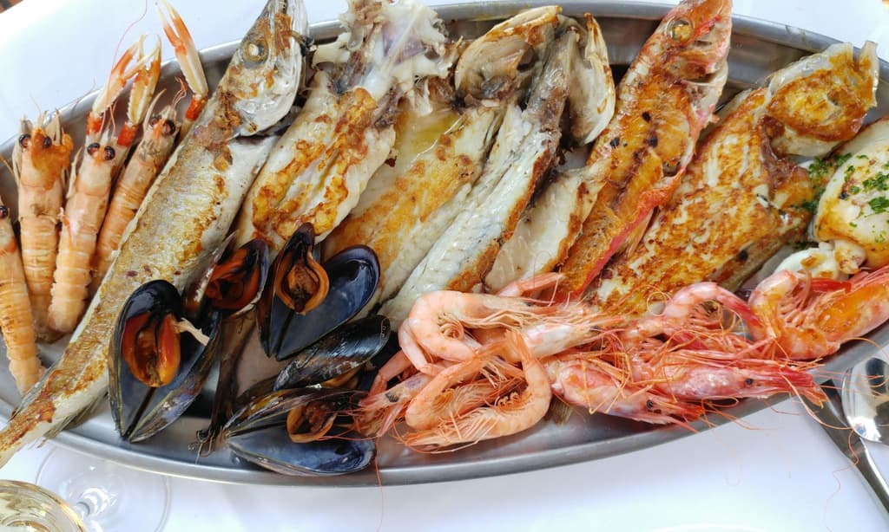
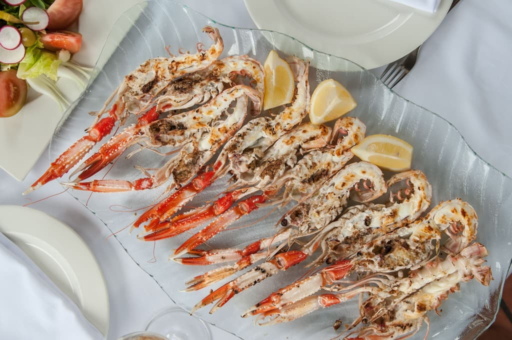
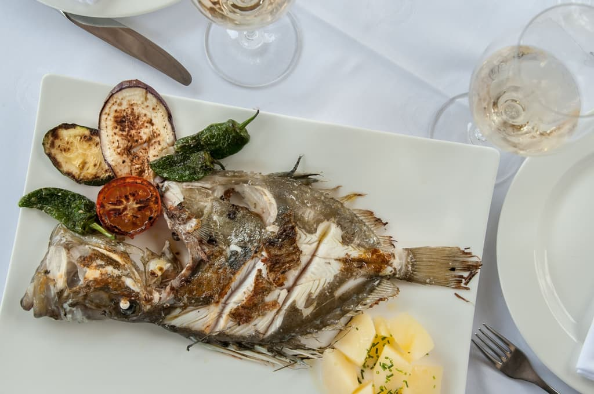
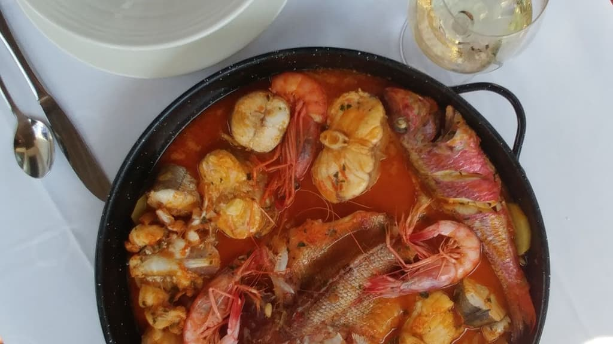
¿Cómo quieres el pescado?
- A la salEntero, en costra de sal
- Al fornAl horno
- A l'espatlaAbierto y dorado, a la espalda
- En llandetaComo lo guisaban los pescadores de la Marina
Según disponibilidad. Pregunta por el pescado del día.
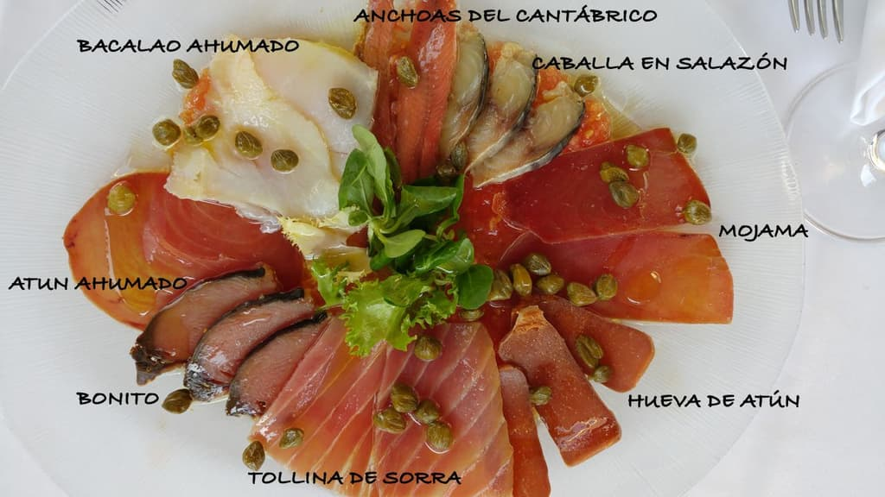
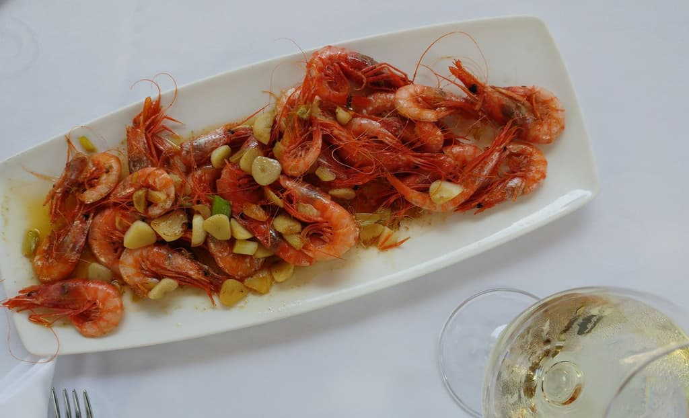
04Tapes de la Marina
Para empezar, lo de aquí.
Antes del arroz, las tapas de siempre de la comarca. Algunas solo se entienden en la Marina Alta, así que aquí van explicadas.
- Torrat
- Pimiento y berenjena asados a la brasa
- 8,50 €
- Tomacat
- El torrat con tomate y salazones
- 9,00 €
- Bull amb ceba
- Estómago de atún con cebolla, un clásico de la costa
- 9,00 €
- Coca de dacsa
- Torta fina de maíz, con torrat, tomacat, gambeta con acelgas o atún
- 4,00 €
- Figatell
- Pequeña hamburguesa tradicional, por unidad
- 3,75 €
- Pilota de putxero
- La pelota del cocido, por unidad
- 5,00 €
- Polp sec
- Pulpo secado al sol, a la plancha
- 19,00 €
- Mullador
- Tomate maduro, bacalao, ajo y aceite de oliva virgen extra
- 11,00 €
05El que més es nomena
Lo que más se nombra en 5.125 reseñas.
No elegimos opiniones: estas son las palabras que más repite la gente al hablar de la casa en Google.
- Paella343
- Arroz a banda86
- Fideuá56
- Hojaldre43
- Parrillada41
- Tellinas26
- Chocolate caliente23
- Arroz del senyoret13
Número de reseñas que mencionan cada plato, según Google Maps (octubre de 2026). El hojaldre se sirve con chocolate caliente.
Valoración en Google5.125 reseñas de clientes
Restaurante recomendado · Guía Repsol«Brisa marinera y sabrosas especialidades de la cocina de las barcas»
Compromiso de Calidad TurísticaSistema SICTED de calidad en destino
«Está cerca de la playa, pero el ambiente es de restaurante mediterráneo, no de chiringuito.»
«Un clásico que nunca defrauda y que ha sabido ponerse al día.»
06La història
De chiringuito en la arena a la mesa de siempre.
- 1980
Una comida familiar. Eran los años del boom turístico y empezaba la cocina fácil para el consumo masivo. Federico y Rosa Devesa abrieron un pequeño chiringuito en Les Marines para no perder el recetario de la Marina Alta ni su producto fresco.
- Con los años
El chiringuito se hace restaurante. Se amplían las terrazas, llega el gran techo de cañizo con paredes de cristal y la bodega crece hasta superar las 200 referencias.
- Hoy
La segunda generación. Pepa y Jaime siguen cocinando platos locales que «no han variado gran cosa desde antaño», para clientes que vuelven cada verano desde hace décadas.
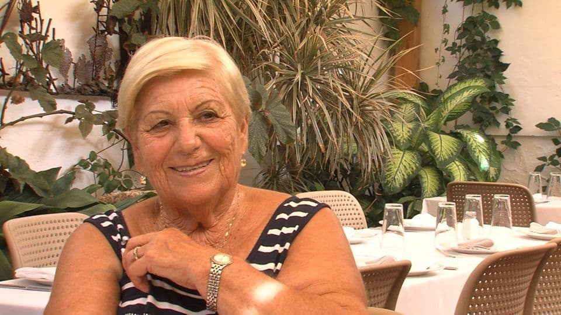
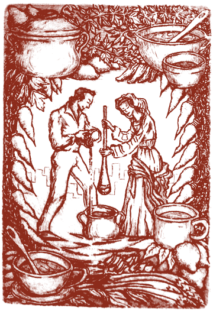
«Els millors records de la meua infància transcorren al voltant dels menjars, plats d'arrels tradicionals elaborats amb amor per ma mare…»
Los mejores recuerdos de mi infancia giran en torno a las comidas, platos de raíz tradicional hechos con amor por mi madre…
La cuina de la Marina. El llegat de la ti Pepa Teresa, vol. I
07Els espais
Tres espacios, fresco en verano y con leña en invierno.
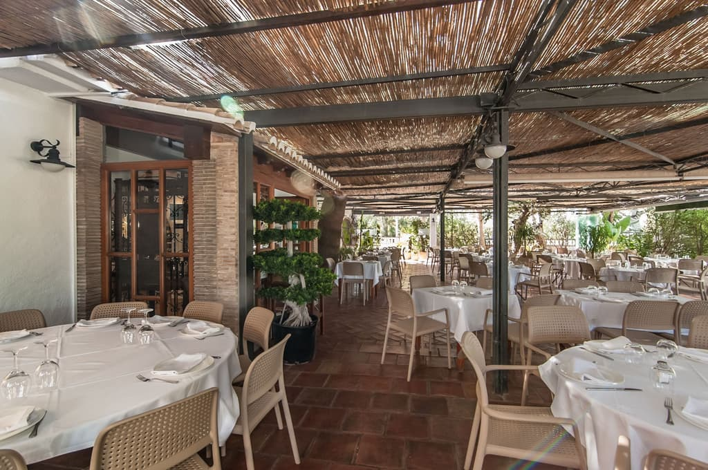
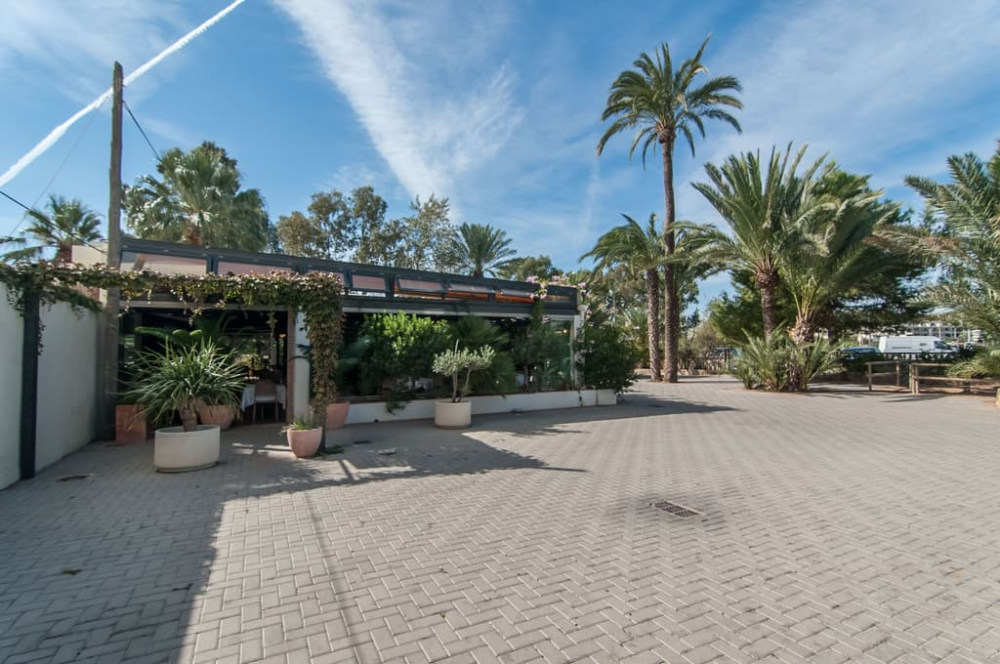
Las terrazas
La grande tiene el techo alto de cañizo y paredes de cristal, rodeada de plantas y palmeras. Está climatizada y tiene ventiladores. La segunda es más pequeña y recogida.
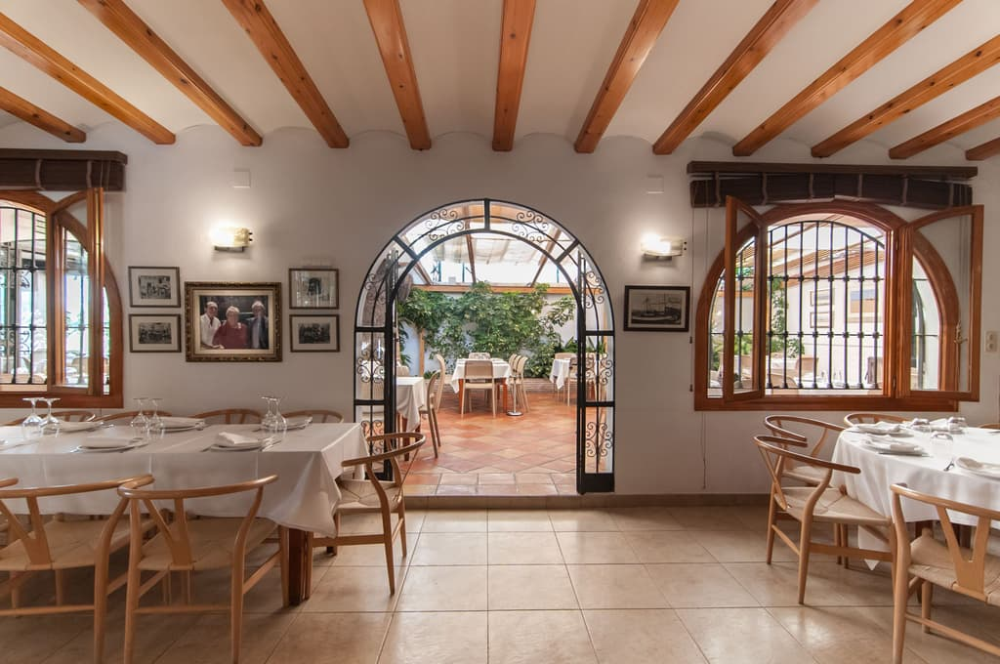
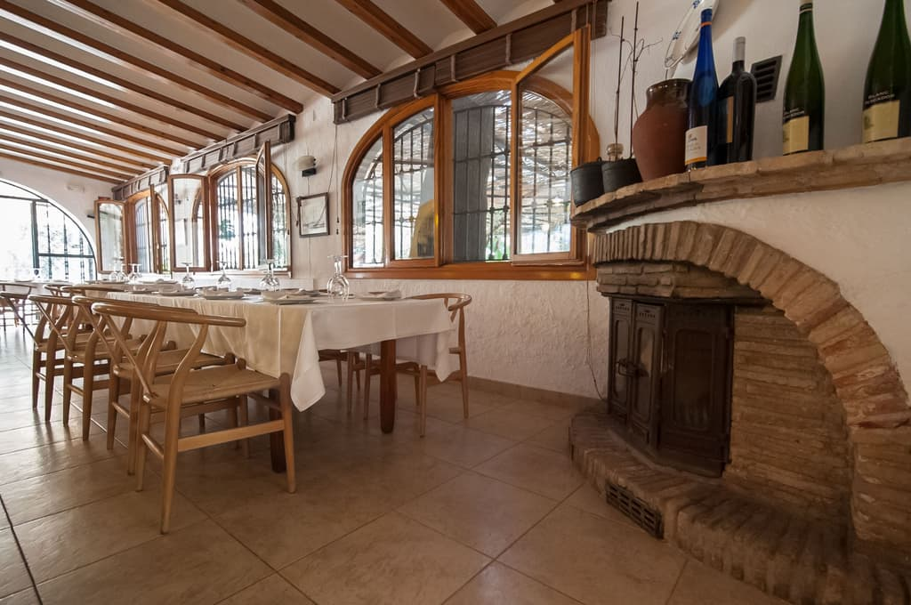
El comedor
Vigas de madera, ventanas en arco y estufas de leña para los días de invierno. Abrimos todo el año, salvo enero.
Aquí pasa todo lo que pasa en la vida: el cumpleaños de la abuela, una cena tranquila en un rincón, la comida de empresa o la cena de las fiestas.
Para grupos y celebraciones, llámanos y lo preparamos contigo. Para los niños hay un pequeño parque con columpios dentro del recinto.
965 78 30 4108El celler
Una bodega a la altura del arroz.
Más de doscientas referencias de distintas denominaciones de origen, cavas y champagne de primeras marcas, para acompañar unos platos que no han cambiado desde antaño. Déjate aconsejar en la mesa.
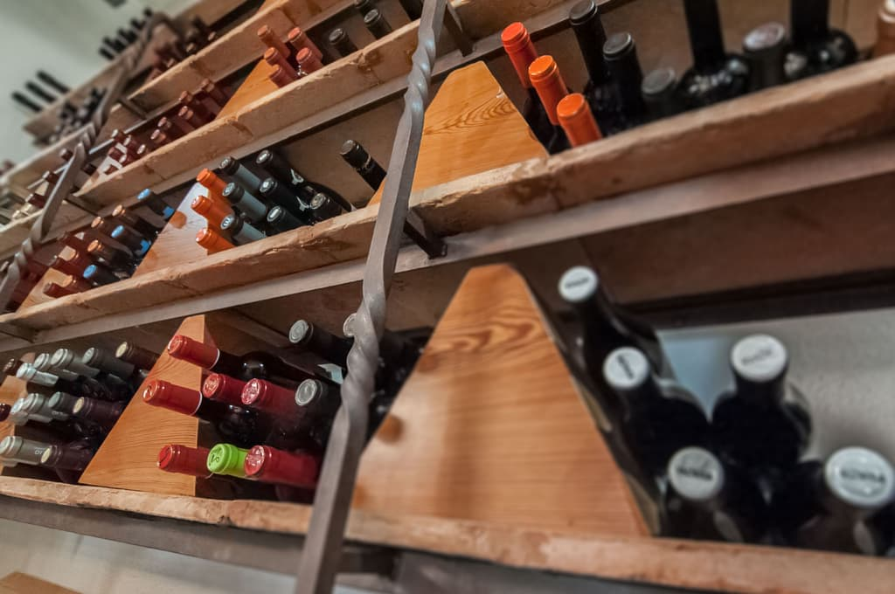
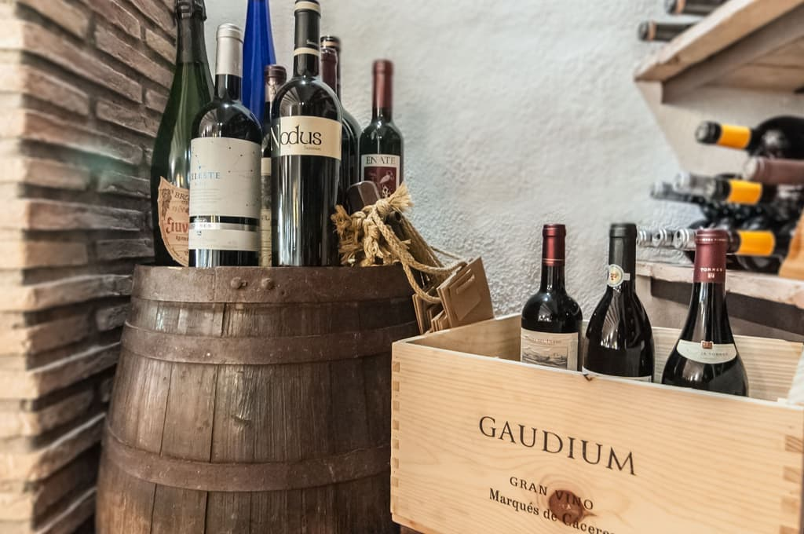
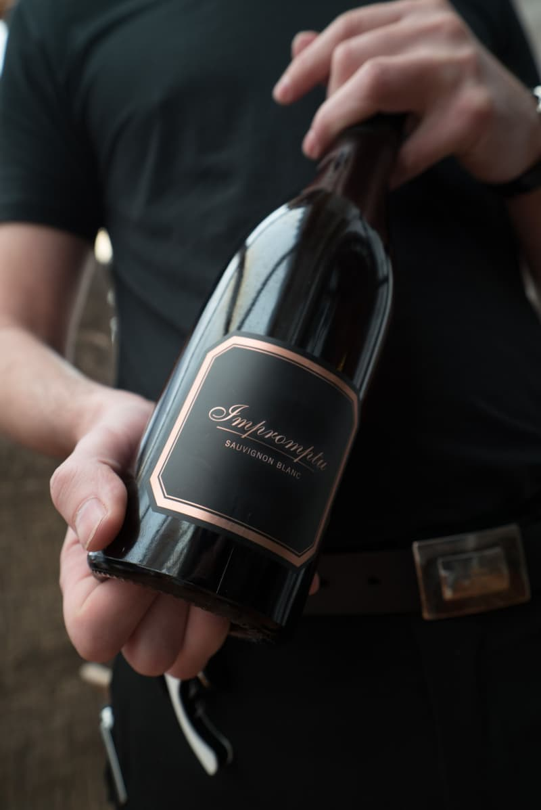
¿Cómo reservo?
Entre semana, online desde esta web. Fines de semana y festivos, por teléfono al 965 78 30 41 y con antelación. En verano, cuanto antes mejor: se llena.
Si la reserva online aparece completa, llámanos: a veces queda alguna mesa.
¿Puedo reservar desde otras webs?
No. Las reservas online solo se hacen desde la web de la casa. No hemos autorizado a ninguna otra página a reservar en nuestro nombre.
¿Cómo funcionan los arroces?
Mínimo dos raciones por arroz. Todos se pueden pedir secos, melosos o caldosos. Si queréis más de un arroz en la mesa, depende de cómo vaya la cocina ese día. El arroz al horno, el de fesols i naps y los guisos marineros se encargan con antelación.
Soy celíaco, ¿puedo comer bien?
Sí. Tenemos pan sin gluten, y muchos platos que llevan gluten se pueden preparar para celíacos si nos lo dices al pedir. Disponemos de información sobre alérgenos.
¿Venís con niños?
Hay sitio de sobra, tronas y un pequeño parque con columpios dentro del recinto.
¿Dónde aparco?
En las explanadas de al lado del restaurante es fácil encontrar sitio, y es gratis. En pleno verano, ven con algo de margen.
¿Se admiten perros?
No, no se admiten perros.
¿Es accesible?
Sí: acceso, aparcamiento, aseo y mesas adaptados para silla de ruedas.
¿Cuándo abrís?
Todos los días menos el martes, de 13:30 a 16:00 y de 19:30 a 23:00. Abrimos todo el año, salvo en enero, que es nuestro mes de vacaciones.
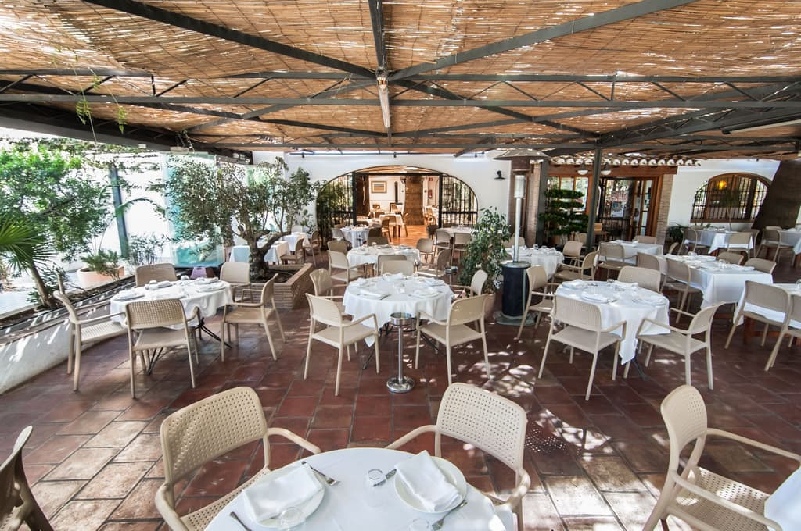
—Fins prompte
Te guardamos sitio bajo el cañizo.
Reserva online entre semana. Para fines de semana, festivos y grupos, llámanos.